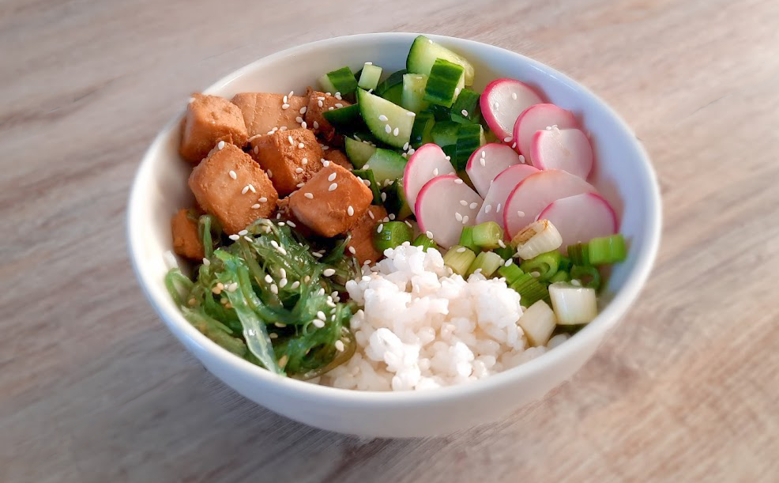

maki sushi
zalm met pastasalade
falafelwrap

banh xeo hoi an style

japanse beef teriyaki

indiase dahl linzencurry

salade met gegrilde ananas

banh mi cat ba style
koreaanse bibimbap

chocoladefondue

groene smoothie

thaise mango sticky rice
avocado salade

chili sin carne met guacamole

enchiladas

hawaiiaanse poké bowl
Je zou denken dat dit gerecht Japans is, maar het komt echt uit Hawaii! Poké betekent in stukken snijden en rauwe vis speelt de hoofdrol. De rauwe vis moet dan wel zo vers mogelijk zijn. In plaats van verse rauwe vis houden dan kun je de vis natuurlijk ook even kort bakken!

Bereidingsduur: 70 minuten
Aantal personen: 2
Ingrediënten:
250 gram zalm
0,5 bos radijsjes
4 stuks lente ui
200 gram sushirijst
0,5 stuk komkommer
70 gram zeewier
6 eetlepels rijstazijn
2 eetlepels sojasaus
1 handje sesamzaadjes
1 eetlepel limoensap
optioneel mango
optioneel avocado
250 gram zalm
0,5 bos radijsjes
4 stuks lente ui
200 gram sushirijst
0,5 stuk komkommer
70 gram zeewier
6 eetlepels rijstazijn
2 eetlepels sojasaus
1 handje sesamzaadjes
1 eetlepel limoensap
optioneel mango
optioneel avocado
Instructies:
1. Kook de sushirijst volgens de instructies. Roer 4 EL rijstazijn door de rijst en laat de rijst 45 minuten afkoelen verdeeld over een groot bord of schaal.
2. Snijd de zalm of tonijn in blokjes van 1 cm. Meng de sojasaus en limoensap door de vis en laat dit even intrekken. Nu kun je de vis eventueel kort bakken. Snijd ondertussen de komkommer in blokjes, de lente ui in ringen en de radijsjes in plakjes. Bak de bosui en radijsjes kort.
3. Verdeel de rijst over twee kommetjes en voeg de groenten, zeewier en vis toe. Besprenkel met wat rijstazijn en sesamzaad.
1. Kook de sushirijst volgens de instructies. Roer 4 EL rijstazijn door de rijst en laat de rijst 45 minuten afkoelen verdeeld over een groot bord of schaal.
2. Snijd de zalm of tonijn in blokjes van 1 cm. Meng de sojasaus en limoensap door de vis en laat dit even intrekken. Nu kun je de vis eventueel kort bakken. Snijd ondertussen de komkommer in blokjes, de lente ui in ringen en de radijsjes in plakjes. Bak de bosui en radijsjes kort.
3. Verdeel de rijst over twee kommetjes en voeg de groenten, zeewier en vis toe. Besprenkel met wat rijstazijn en sesamzaad.
Probeer in plaats van verse zalm eens tempeh of edamame bonen, avocado of mango in plaats van radijsjes!